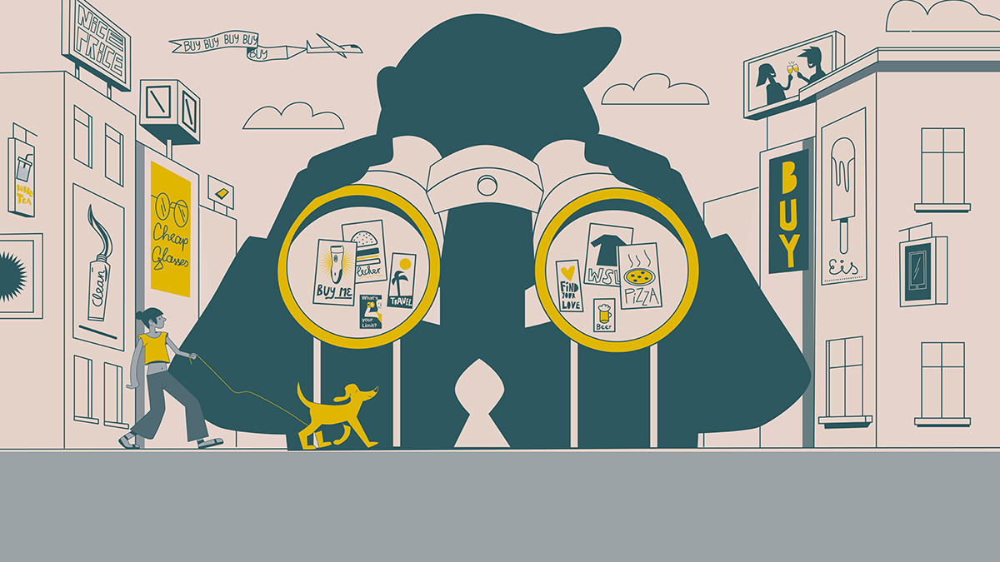

Personalisierte Werbung

URL: https://cdn.netzpolitik.org/wp-upload/2021/02/personalisierte_werbung.jpg Abgerufen: 02.12.2021 14:20 UTC+1
Was ist das?
- Auf Benutzer zugeschnittene Werbung im Internet, basierend auf persönlichen Daten, wie dem Alter, Wohnort, Geschlecht und online angegebenen Interssen
- Es werden bestimmte Werbeanzeigen geschalten, die den Nutzer interessieren könnten
- Man findet diese Art von Werbung auf Webseiten wie Youtube, Amazon, Facebook, GMX, usw., auf Browserstartseiten und in Social Media Apps, wie Instagram, Facebook, ...
- Es werden bestimmte Werbeanzeigen geschalten, die den Nutzer interessieren könnten
- Man findet diese Art von Werbung auf Webseiten wie Youtube, Amazon, Facebook, GMX, usw., auf Browserstartseiten und in Social Media Apps, wie Instagram, Facebook, ...
Funktionsweise:
- Durch Cookies auf Webseiten, Browser- und Geräteidentifizierung
- Ein Cookie ist ein Key-Value-Pair, das für eine Webseite im Browser gespeichert wird.
Das heißt, dass ein Cookie einen Namen (Key) hat und eine Textinformation (Value) enthält.
Beim Aufrufen einer Website werden die Cookies, die für diese Website gespeichert wurden, an den Webserver gesendet.
Somit kann beispielsweise Werbung für Produkte angezeigt werden, die man zuvor in den Warenkorb gelegt hat.
- Ein Cookie ist ein Key-Value-Pair, das für eine Webseite im Browser gespeichert wird.
Das heißt, dass ein Cookie einen Namen (Key) hat und eine Textinformation (Value) enthält.
Beim Aufrufen einer Website werden die Cookies, die für diese Website gespeichert wurden, an den Webserver gesendet.
Somit kann beispielsweise Werbung für Produkte angezeigt werden, die man zuvor in den Warenkorb gelegt hat.
Vorteile:
- Benutzer finden schnell Produkte, die sie interessant finden oder ihnen gefallen
- Erinnert Nutzer immer wieder an vorherige Suchen
- Unpassende und eher unerwünschte Werbungen werden nicht angezeigt, somit werden Benutzer nicht "genervt".
- Es entsteht eine stärkere Bindung zwischen dem Nutzer und der Markte, von der Werbung gezeigt wird.
- Erinnert Nutzer immer wieder an vorherige Suchen
- Unpassende und eher unerwünschte Werbungen werden nicht angezeigt, somit werden Benutzer nicht "genervt".
- Es entsteht eine stärkere Bindung zwischen dem Nutzer und der Markte, von der Werbung gezeigt wird.
Nachteile:
- Für die Werbetreibenden ist es mit viel Aufwand und Geld verbunden, um die Werbungen zu aktualisieren.
Dies gilt jedoch auch für nicht personalisierte Werbung.
- Datenschutz möglicherweise gefährdet.
Laut einer Umfrage von Statistika aus dem Jahr 2018 haben 76% der 1000 Befragten Personen Furcht vor Datenmissbrauch durch personalisierte Werbung.
- Google sammelt Daten über die Suchaktivitäten, um Werbung zu personalisieren.
(Umfrage: L. Rabe in "Statistika", Seite "Welche Einstellung haben Sie gegenüber personalisierter Werbung?". Veröffentlicht am 10.11.2021. Abgerufen am 27.11.2021 18:46 UTC+1) - Diese Werbeform kann beispielsweise durch politische Parteien genutzt werden, um eine bestimmte Zielgruppe auf sich aufmerksam zu machen.
Dies gilt jedoch auch für nicht personalisierte Werbung.
- Datenschutz möglicherweise gefährdet.
Laut einer Umfrage von Statistika aus dem Jahr 2018 haben 76% der 1000 Befragten Personen Furcht vor Datenmissbrauch durch personalisierte Werbung.
- Google sammelt Daten über die Suchaktivitäten, um Werbung zu personalisieren.
(Umfrage: L. Rabe in "Statistika", Seite "Welche Einstellung haben Sie gegenüber personalisierter Werbung?". Veröffentlicht am 10.11.2021. Abgerufen am 27.11.2021 18:46 UTC+1) - Diese Werbeform kann beispielsweise durch politische Parteien genutzt werden, um eine bestimmte Zielgruppe auf sich aufmerksam zu machen.
Arten:
Quelle (Skadi Richter: In "clicks digital", Seite "Personalisierte Werbung: Vor- und Nachteile für Ihr Unternehmen". Veröffentlicht am 05.04.2018. Abgerufen: 12.11.2021)
- Content-Targeting: Werbungen werden nur auf Webseiten mit dem gleichen Inhalt angezeigt.
- Semantisches Targeting: Werbungen werden nur auf Webseiten mit ähnlichem Inhalt angezeigt.
- Behavioral-Targeting: Werbungen werden auf Webseiten, egal mit welchem Inhalt angezeigt. Die Anzeigen werden aufgrund des Surf-Verhaltens gewählt.
- Retargeting: Nutzern, die beispielsweise ein Produkt in den Warenkorb gelegt aber nicht gekauft haben, wird gezielt Werbung für diese Produktart angezeigt.
- Social-Media-Targeting: In Social Medias werden Werbungen gezeigt, deren Thema den gelikten Beiträgen entspricht.
- Psychografisches Targeting: Werbungen werden auf Grund des Verhaltens des Nutzers geschalten. Beispielsweise, wenn ein Nutzer günstige Produkte bevorzugt, werden ihm günstige vorgeschlagen.
- Content-Targeting: Werbungen werden nur auf Webseiten mit dem gleichen Inhalt angezeigt.
- Semantisches Targeting: Werbungen werden nur auf Webseiten mit ähnlichem Inhalt angezeigt.
- Behavioral-Targeting: Werbungen werden auf Webseiten, egal mit welchem Inhalt angezeigt. Die Anzeigen werden aufgrund des Surf-Verhaltens gewählt.
- Retargeting: Nutzern, die beispielsweise ein Produkt in den Warenkorb gelegt aber nicht gekauft haben, wird gezielt Werbung für diese Produktart angezeigt.
- Social-Media-Targeting: In Social Medias werden Werbungen gezeigt, deren Thema den gelikten Beiträgen entspricht.
- Psychografisches Targeting: Werbungen werden auf Grund des Verhaltens des Nutzers geschalten. Beispielsweise, wenn ein Nutzer günstige Produkte bevorzugt, werden ihm günstige vorgeschlagen.
Beeinflussung:
Die Beeinflussung findet statt, indem den Nutzern bestimmte Produkte vorschlagen werden, die sie sich als letztes angesehen haben oder sie interessiert.
Man wird schneller auf die Werbung aufmerksam und wird dazu verlockt, sich näher mit dem Produkt zu beschäftigen und somit auch zu kaufen.
Wenn hingegen Werbung angezeigt wird, für die man sich nicht interessiert, ist sie eher nervig und lästig.
Laut der oben genannten Umfrage werden 25% der Befragten durch personalisierte Werbung eher zum Kauf verleitet.
Laut der oben genannten Umfrage werden 25% der Befragten durch personalisierte Werbung eher zum Kauf verleitet.